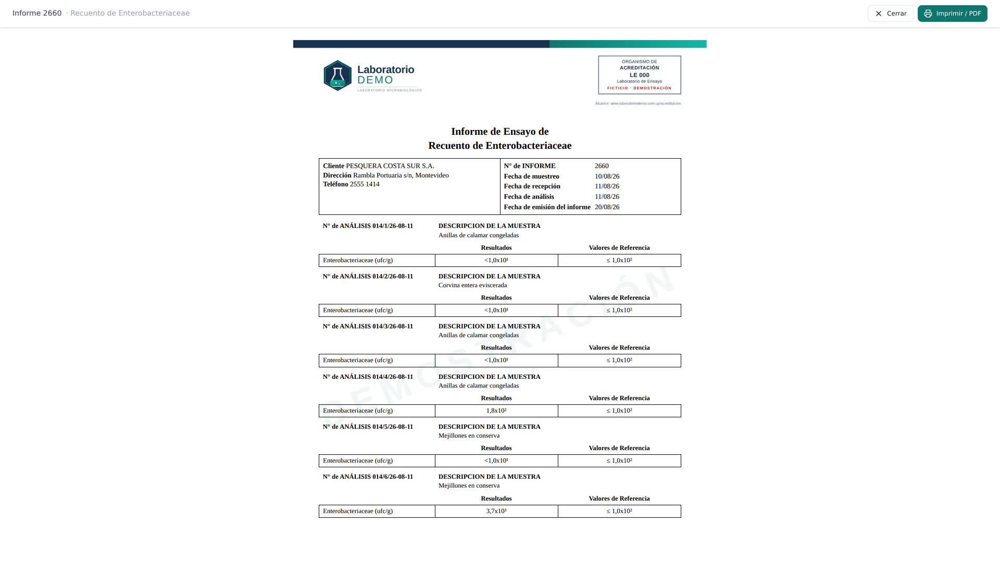

{kind=link}
Los datos no salen del laboratorio
Los clientes, sus resultados y sus informes quedan en un servidor del laboratorio. No hay una copia en el servidor de otro.
El entregable
Todo el circuito existe para esto: una hoja que sale sobre el membrete del laboratorio, con su logo, su dirección, su número de acreditación y la firma del responsable.

AmpliarInforme de una instalación de demostración. El laboratorio, el cliente y los resultados son inventados.
El sello
Si el ensayo usa una metodología acreditada, el informe sale con el sello. Si no la usa, sale sin él.
Esa decisión la toma el sistema a partir del catálogo del laboratorio, no la persona que aprieta imprimir. Es la diferencia entre un criterio escrito una vez y un criterio que hay que recordar cada vez.
El ensayo está marcado como acreditado en el catálogo, y el sistema imprime el sello sin que nadie se lo pida.
No hay forma de que salga con sello por distracción, por apuro o porque se copió la plantilla equivocada.
Por qué sin internet
Los clientes, sus resultados y sus informes quedan en un servidor del laboratorio. No hay una copia en el servidor de otro.
El sistema no depende de la conexión. Las computadoras del laboratorio entran por la red interna.
Lo que se escribe al ingresar la muestra no se vuelve a tipear nunca más: viaja hasta el informe.
Servidor local · sin conexión a internet
Sin compromiso
Un mes gratis para que el programa se adapte a tu laboratorio. Y no al revés.
Pedí los cambios que necesites. Si al terminar el mes no te convence, no pagás nada.
Quiero probarlo